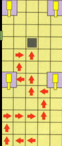

All-Characters Code
Scientist Guns
Two
different guns at thesame time
More guns
Even More Guns
Uh...Guns, anyone?
Remote
Mines without Detonators
Floating Mines
More Floating Mines
Invisible Mines
Invisible Mines,
Part II
Exploding stairs
Cool train glitch
Shoot through the
wall
Climb the
vent in the Facility
Extra time on the
Train
Levitate
Slap Jaws
How
to Get the Golden Gun in Level 20
Xenia's Fast Death
Play As Same
Character Trick
Ourumov's Briefcase
Cradle:
Complete Objective B quickly
Tank Cruise Control
Bond with three
hands
Flying Bond on
Cradle
Mine Sandwich
Run Faster Trick
Dam Glitch (People in truck)
Kill
Trevelan Without Activating Alarm (Facility)
Tiny Bond Floats
Mean Flagtag Glitch
Massive Head
Injuries Glitch
Mysterious
Spots on the Wall Glitch
CCTV Movie Cover
Shoot
Tank Shells From Your Forehead
Scroll
Through Weapons Backwards
The
Invisible Odd Job (Archives)
Extra
Multi-Player Stages
All-Characters Code
Enter this on Multi-Player mode on character select screen. Start
at the very end character on the right... (Mishkin or
Moonraker Elite)
1. Hold the L and R
buttons and press C-left
2. Hold L and press C-up
3. Hold L and R and press left on the control pad
4. Hold L and press right on the control pad
5. Hold R and press down on the control pad
6. Hold L and R and press C-left
7. Hold L and press C-up
8. Hold L and R and press right on the control pad
9. Hold L and R and press C-down
10. Hold L and press down on the control pad
Your game will not save this code, so you'll have to re-enter it
every time you want to use the extra characters...
Scientist Guns
On any board in Secret or00 Agent mode with scientists (i.e.
facility, silo, caverns), shoot a scientist with any gun just once
in the arm and once in the leg. If you did it right,the guy
shouldn't die, but he should take out a DD44 Dostovel and
start shooting you! They usually hit you and waste health, so
don't hesitated to kill them and grab their weapon. Some people
believe that shooting the scientists twice in the leg works
better. Try it and see.
Two different guns at the same time
Once you have a paired set of guns do the following...
1-Press and hold A
2-Press Z twice
3-Release the A button
4-Press the A button
5-Press Z to fire 2 or 3 times to fire
while changing weapons.
If done correctly firing the weapon will lock 1 of the weapons on the screen in the middle of changing weapons, leaving you with a mixed pair!
More guns
Play the train on the agent level. Now go to the two boxes stacked
on top of each other right before the first door on your left.
Blow them up and a RC-P90 should pop out with lots of ammo. If you
play on secret agent a DD44 will pop out. There is none for 00
agent.
Even More Guns
In the Water Caverns, in the big room by the Com area by the far
windows on the right, in the right hand corner there is a box
which, if shot, will explode into a smaller box, which in turn if
shot will turn into another smaller box. Continue this until two
metallic boxes appear. When shot, each of these creates a AR33
Assault Rifle. You can then hold an Assault Rifle in each hand.
Couple that kind of fire power X2 and the zoom function...oh baby.
Uh...Guns, anyone?
In the caverns level when you go through the blast doors and then
through the normal doors to find Trevylan, you can turn back and
hang about a bit . If you wait around long enough then an entire
fleet of soldiers armed with weird shotguns (with the cartridges
on the side????) and RCP-90s come along. After you kill some of
them you can run about with two RCP-90s with full ammo. Woohaa!
Remote Mines without Detonators
On any level with remote mines throw a remote mine anywhere. Hold
A+B and it will detonate.
Floating Mines
Place any kind of mine (remote mines, proximity mines, or timed
mines) onto a piece of glass and shoot the glass until it breaks
without hitting the mine and blowing it up. Instead of the mine
falling it will be floating in midair!
More Floating Mines
Pick remote mines and then go to the Bunker in Vs. mode. Then you
place one mine on each of the T.V.'s(there are eight of them)
that are on the ceiling. Blow them up. Now you can place mines
anywhere you want in mid-air. All players will have this cheat.
Invisible Mines
In Multi-player mode, plant a mine on ammo, then pick up the ammo.
When you do, the mine is still there but you and your enemy can't
see it. It's a good trick if someone is chasing you and isn't very
close...
Invisible Mines, Part II
Kill another player. Now place a mine on a weapon that the
defeated player lost, then pick it up. The mines will be invisible
forever. Since no power-up will reappear in that spot, it will
look like there is nothing there. Use this trick for a
nice proximity mine surprise.
Exploding stairs
Choose Multi-player "remote mines" "Bunker"
and choose characters if you want to... Now go to the big hall
(The hall with TV´s) Now choose the"Remote mines" and
crouch down and go to the stairs... Now you will see that you can
throw a mine exactly under the stairs -not on the diagonal side!
Others will see the mine(s) only at the straight side! Now when
you know a person will go on the stairs...KABOOOM!
Cool train glitch
For this code you have to have 2x Grenade launchers. On the train
you beat all of the missions and use your laser watch to get out,
then you run to the front of the train,get your grenade launchers
out and shoot them up in the air. When you get done and see the
part where they are shown running away from the train all of the
grenade launchers bombs are hitting Bond and
Natalya.
Shoot through the wall
In Surface 2, you can shoot through one of the walls to kill
enemies. The glitch is the forest wall between the cabins enclosed
by a fence and the cabins down that road with the alarm and video
camera. It is in the boundary line of trees. It is the part that
comes to a point. If you walk up next to it, you can seethe
cabins enclosed by the chain fence and the shadows of the enemies
when they walk by. You can shoot right through the boundary wall
to kill the enemies.
Climb the vent in the Facility
You need to be in Multi-Player mode. Get one player to get on the
toilet right under the vent. Then the other player runs in and
starts to wiggle left and right and always going forward into the
other person. While you're doing that look up then down by
pressing C up, C down. This is good for capture the flag.
Extra time on the Train
On the Train, level 14, when you get to the end open the door and
you will see Ourumov with a gun holding up Natalya. In the
background you will see Xenia and Trevylan. Side step to the left
and quickly kill Xenia with the PP7,and as soon as you know that
she is dead kill Ourumov. If done correctly you will get an extra
1:30 which allows you to have time to complete your Objectives in
00Agent.
Levitate
To get into the vent with only one player, on multi-player or
mission mode, get into a stall facing the door. Hold down the R
button, C-Right, and left on the analog stick. You will begin to
spin. After spinning, you will start"Hovering." When
you are on the vent, let go of all the buttons, and push back on
the analog stick and voila!
Slap Jaws
Use your Haikibo kung fu slap on Jaws. He won't get off a shot!
How to Get the Golden Gun in Level 20

Xenia's Fast Death
An easy way to beat Xenia in level 15, Jungle. When you get to the
bridge, move slowly forward and as soon as the music starts
playing and Xenia says something get back off the bridge. Stand to
the left or the right of the bridge. Zoom in with your assault
rifle and wait for her to appear on the bridge. Start shooting as
soon as you see heron the bridge. You can see her, but she can't
see you. Try hitting her mostly in the head. If you do everything
right, she should die on the bridge without firing any shots at
you. If you read this and still confused, look at the map.
Play As Same Character Trick
There is a trick which allows you to have doubles or triples of
characters in GoldenEye 007's three-and four-player modes. The
following example shows you how to have three of the same
characters in a four-player game. Once you understand how it
works, you can use it in a three-player match, or to have 2
matched pairs of players.
1. Start
a four-player match in the multi-player mode, and pick the
character you want to "multiply" as Player 4.
2. Pick any other characters for Players 1, 2
and 3.
3. Change the number of Players from 4 to 3, go
to the Characters screen again,and select Player 4's character to
be Player 3. Pick any characters for Players 1 and 2.
4. Change the number of Players from 3 to 2, go
to the Characters screen again,and select Player 4's character to
be Player 2. Pick any character for Player 1.
5. Change the number of Players back to 4 and
start the game. Players 2, 3and 4 will be the same character.
Ourumov's Briefcase
Most of you probably noticed that when you kill Ourumov in Silo,
he drops a briefcase and a key. What do you do with these
mysterious objects. I already tried to plug the key into every
computer in this level. I even tried putting it into the
satellite, but nothing works. The key also appears as a plain dash
in your weapon list, and there is no picture of it. Also, when you
just kill Ourumov and he drops it, the key looks like a tiny gray
box. Now what's with the briefcase?Why was he carrying it? What
do you do with it? I also tried to plug it in the computers, and I
even tried to give it to one of the scientists, but he just ran
away. You can't look inside,and you can't use it. What's it for
then? I also heard that those are just the props like in the
movie, but if you can get Ourumov to drop it then it's definitely
for something. I also have noticed a some sort of secret passage
in Silo. When you just start the level go to the door and turn
around. You should be facing a huge rocket. If you turn between
the rocket and the door to your left and lean down a little, you
should see a some sort of blue passage on the round wall. It
doesn't look blue at first, but when you look closer it looks very
blue. It looks like some sort of a ventilation passage. If you
shoot it, it looks like the bullets don't get through, but if you
take your camera and zoomin, you can see that your bullet marks
are inside the passage. You can also through your plastique in
there.
Cradle: Complete Objective B quickly
Here's an easy way to pass GoldenEye's Cradle level: When you go
down to the platform with the two sheds on it, shoot any Janus
employees and go left. Stand with your back to the shed with the
console, looking directly at the bottom of the stairs and the door
of the opposite shed. Shoot anyone coming down the stairs,and
listen for the door to the shed open (to the left), and shoot any
guards. After several seconds, you should hear a grenade go off
inside the shed behind you. If you are in the correct position,
Trevylan will go through the "for England..." dialogue,
and then "objective B: completed" will be displayed. All
you need to do now is complete objective A and go straight
through the trap door to finish the stage. Using this method also
enables you to get the gold PP7 cheat, which is nice.
Tank Cruise Control
On the tank levels (Runway and Streets), you can put your tank on
cruise control. Simply push the stick forward a bit to move the
tank forward ever so slowly. Any tank speed will work, but if it's
moving slow, you can aim easier. With the stick forward, hold down
the aiming button and Voila! You can now let go of the gas. The
tank will continue to move forward and you can now swing the
turret around and blast away (although it might be better to use
the AR33 Assault Rifle).
Bond with three hands
Here's how to give Bond three hands: With the all-weapons cheat
on, scroll through your weapons until you've got double lasers. At
this point, press A, and before it switches to the watch laser,
press Z+A (to scroll backwards), quickly release, and then press
and hold Z. If done correctly, you should now have one
hand holding a laser, and two more controlling the watch laser.
Flying Bond on Cradle
Turn on fast animation and turbo mode. Go to the cradle. When you
beat it, you will go flying off the helicopter without the copter.
Mine Sandwich (works with
covert modems too)
MINE SANDWICHES To do the following code you must have these
cheats turned on: All Guns / Infinite Ammo. Take out your Remote
Mines as your weapon and look down and throw up to 34 mines in the
same exact place without moving the aimer at all. When this is
done up close you should get a vertical sandwich and when thrown in
the same place from a distance you will get a curving sandwich.
Run Faster Trick
Want to run faster in GoldenEye?No problem: The trick is that
when you run diagonally (e.g hold 2-C-button sat once and look 40
degrees to the right/left), you run faster. It's just the thing to
shave off those extra seconds for those time-activated cheats.
Dam Glitch
This one requires Turbo Mode and Slow Animation. Enter Dam and go
around and kill EVERY SINGLE PERSON before the first watch tower.
If you get shot by them in your return trip it might ruin things.
Now, there's another step that's vital to this. When opening up
the double doors, make sure the truck stays right where it's at.
Don't let it move any farther than past the first door. This can
be done by pressing the switch to on, then running around the
truck, through the semi-open door and activate the other switch.
This will leave the truck sitting at it's normal location. Now,
when you reach the first watch tower,go inside and activate the
alarm, then run like heck back to those doors where you stopped
the truck. Open the first one, then run around and open the
second. If you did everything correctly, the truck will not move
at all. Go around to the back of the truck and you'll see two guys
inside it! Shoot between their feet and they'll both try to run at
you, but the back of their heads will get stuck and they'll just
keep on running. It's almost humorous.
Kill Trevylan Without Activating Alarm
This lets you get the D5K,so you might want to spare some enemies
before you get to Trevylan. Go to the large area with the bottling
tanks and Trevylan. Instead of going to meet him, make a left and
go through another door, kill the two guys,then make a right.
You'll be in an area above the tanks. Using your KF7Soviet, zoom
in on Trevylan and take pot shots on him (he he). Once he's dead,
go down, take his gun, then have a blast. If you turn on any
gun cheat (Gold PP7, Magnum, etc...) you'll also get max ammo for
it.
Tiny Bond Floats
You need Tiny Bond for this trick. Get to the top of any stairway
or ladder. Now, crouch, look down,and walk slowly off the edge.
You will hover in the air! However, it is extremely difficult to
move elsewhere. The best place in the game to do this is the final
watch tower on the Dam. Go up to the top, then slowly walk off,
and make a right off the next ladder. SLOWLY walk in a
diagonal direction towards the corner in the cement, then turn 45*
to the left and walk forward. If you're lucky you'll be 30 feet in
the air, and 30 feet from the closest wall! You might consider
activating Paint Ball to mark any dangerous locations where you
can fall back to the ground. Note: NEVER EVER press R. This will
cause you to get up from your crouching position and will result
in you falling.
Mean Flagtag Glitch
Choose multi-player and switch to Flagtag mode. Pick the Archives
battle arena. Once you get the flagin the game, run into one of
the rooms with only one way in, close the door and stand directly
in front of the door. The flag will be sticking out from behind
the door, everyone outside the room can see it but can't get in.
You can taunt them for as long as you like.
Massive Head Injuries Glitch
You need infinite ammo to do this cheat (Also DK Mode and slow
anim. helps.) In the Water Caverns,open the elevator door and
slide quickly to the left wall of the elevator,if done right
nobody will fire at you, now start moving back and pick off the
first guy, now the second guy will come running, pick him off to.
You should still be standing next to the wall in the elevator, now
glance over to the right SLOWLY and if done right, your see
Trevylan standing there motionless. Now use your ZMG-90 and take
about 200 shots aiming at his head. Now when you quit your head
shots are up at 200 and your kills are at 2.
Mysterious Spots on the Wall Glitch
For this glitch you will need paintball mode. On the first level
(Dam), go through the level killing everyone. When you're near the
dam, go down to the docks. Go to the end of the docks then turn
around, start shooting all over at the watchtower. Now go back up
to the dam and go over to the part where you would normally jump
off. Look down at the side of the dam and you will see paintball
marks all over the wall.
CCTV Movie Cover
This isn't a cheat so much as it is a cool thing to see. Most
people already know about it, too. But in case you haven't, and
you want to know every little bitchin tidbit in this game. Well,
then, duh, here you go. In the second bunker level, obtain the
cctv as you normally would. Now hit the start button and go into
the inventory list. Highlight the CCTV tap and the tape looks like
the GoldenEye movie box.
Shoot Tank Shells From Your Forehead
This is a pretty cool glitch that works only in the tank levels
(Streets or Runway). You also need to switch the infinite ammo
code on. Go to the tank and climb on top. Switch your weapon to
the one immediately before the tank shells. Then, while switching
to the tank shells, jump off the tank. If you did it
right,Bond's weapon will still be switched to tank shells --
you're ready to fire some "big ones" from your forehead.
Scroll Through Weapons Backwards
Did you know that you can scroll through your weapons backwards?
Simply press and hold A, then tap Z (or press them both at the
same time), and voila!
The Invisible Odd Job (Archives)
Surprise your buddies by lurking in a spot that renders you
invisible. Play the multi-player mode in the Archives levels
(without the radar). Choose Odd Job as your character,go into the
basement, destroy one of the metal crates (make sure the top is
still on), then go into the crate, duck, put your head down, and
voila:No one can see you!
Extra Multi-Player Stages
Beat the second Severnaya bunker, water cavern and military
archive stages in agent mode and they will then be accessible for
multiplayer play. Note: Only two to three people can play them,
though.